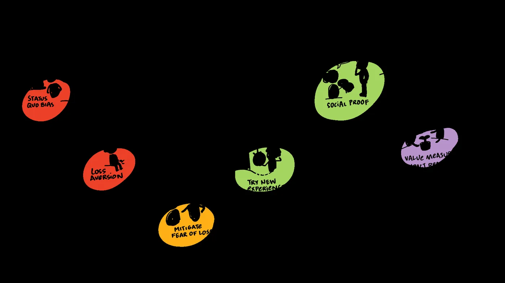
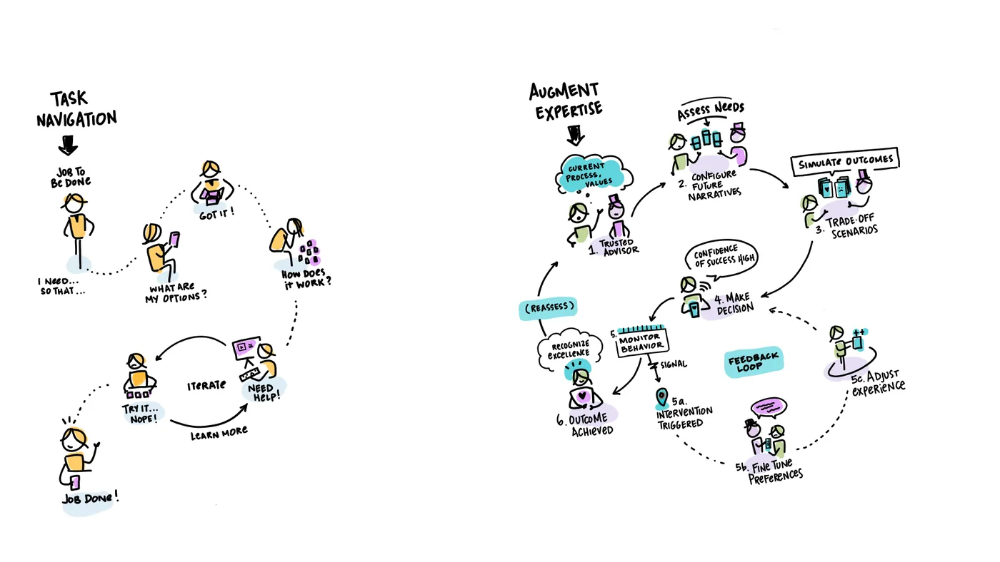
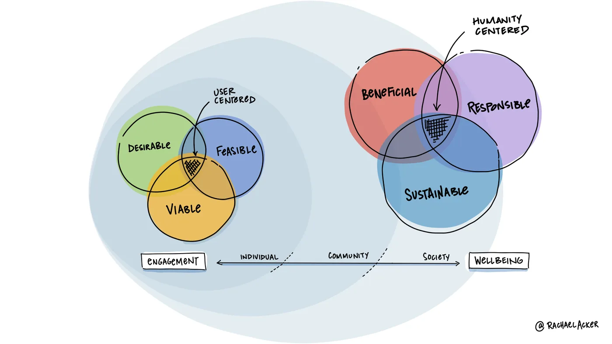

A flat fee, agreed before we start. Never a share of what you earn.
How it works
Three steps. Then it’s yours.
01
Tell us where you are
Zero or one. We’ll say plainly whether we can help.
02
We design it with you
A few sessions, step by step, with your own numbers where you have them.
03
You watch a few numbers
You know early when something slips, and what to fix first.

Change sticks when the fear of losing something is met first. We start there.

Most software helps you finish a task. We design for the loop on the right: judgment, with support.
Where the method comes from
Built with nurses, not for them
With SONSIEL
Innovation workshops
Nurse-led teams used Aurora, our AI innovation advisor, to move from a health challenge to a plan they could act on.
With Boston College
Diabetes Prevention Program
Research, culturally sensitive design and a one-day hackathon with the Vietnamese American community.
With Boston College and Mass General Brigham
iSense
A pilot to help prevent delirium by knowing each patient as a person.
Also: Nurses You Should Know, a nurse-led Forest Therapy initiative, and illustrations with the University of Pennsylvania. Building a product team’s idea instead? Meet Aurora at healthero.ai.

We design past “will people use it” to “is it good for them, and can it last.”
Talk to us
Tell us where you are
Rachael Acker, founder, reads every note. One line is enough.